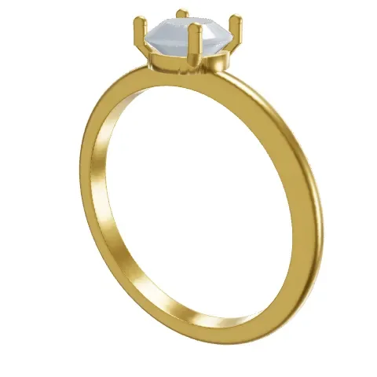

One conversation, a real ring.
GemCore turns your words into exact CAD geometry: shank, head, prongs and stone seats, at the exact finger size. It checks the solid and exports STL and STEP files ready for wax printing and casting.
Version 0.1.0. Runs locally today and in Codex. The ChatGPT plugin is ready in the code and has not been published in the ChatGPT app directory yet.

See it working in three minutes.
The video loads only when you press play (about 14 MB, voice included). Keys inside the video: Space pause, M voice, F full screen, C subtitles, arrows change scene.
The model talks. GemCore builds.
GemCore is made to be used by an AI model. The model reads your words and drives GemCore through its tools. GemCore does the geometry and the checks.
You describe
Say what you want in your own words. Example: “a solitaire, size 14, yellow gold, 6 mm stone”.
The model picks
It finds the closest piece in the catalogue (list_ring_typologies) and builds the base (start_ring_typology). What you did not say, it chooses and tells you in one line.
GemCore builds & checks
Real B-rep solids with build123d and OpenCascade, then checks on geometry, finger size, metal thickness and the exported mesh.
You refine & export
Answer in words or open a panel. Every change is a new revision. Export STL or STEP.
Real panels, real pieces.
All screenshots are taken from the real GemCore viewer running locally.
Swipe to see more
A catalogue to start from
22 ring types and 125 catalogue entries, in eight families: with a stone, bands, free closed shapes, open and wrapped, sculpted, braided, signets, special.
- 78 entries are ready, 8 are close matches, 39 are marked “not yet”.
- The model is told which pieces are ready and offers the nearest one.
Editors under the piece
Shank, Curves, Drawing, Size, Weight, Rope, Engrave, Stones, Regular pavé, Cage, Sculpt and Lines. The current choice is highlighted; a change rebuilds the ring.
Exact size and weight
Italian, European (ISO), US and UK sizes. The inner diameter is measured on the solid. The Weight panel gives the metal for each alloy, the wax volume and the stone carats.
Signets and engraving
Initials, text or a cameo made from a photo. The Crop panel shapes the face; the engraving is cut at a real depth.
Pavé
Place one gem where you click, or lay regular rows along the spine of the band. Beads are added between the gems.
Free shapes, sculpt, ropes
Bypass spirals, drops with a tail, serpents; molten and hammered surfaces; ropes and braids along an edge. The Drawing panel moves every point on its X/Y/Z axes.
Every tool, by area.
Names checked in the source code on : 99 tools in the local MCP server (50 for the model, 49 used only by the 3D panel), 10 in the ChatGPT plugin server, 7 command-line commands and 76 routes of the local web API.
Swipe to see more
Start a new piece
- show_gemcore_welcome
- Welcome panel: carousel, benchmarks and limits.
- list_ring_typologies
- The catalogue: the first step of every new ring.
- start_ring_typology
- Builds the base of a catalogue piece as a new project.
- list_jewelry_templates · get_template_parameters
- Parametric templates and their parameters.
- create_jewelry_spec · validate_jewelry_spec · generate_jewelry
- Reproduce an existing JewelrySpec and generate it.
Change the piece
- modify_jewelry
- Incremental change by parameters or simple words.
- apply_design_operations · get_design_vocabulary
- A list of vocabulary operations as one revision.
- apply_style
- A catalogue style: split shank, cathedral, bezel…
- get_ring_shape · set_ring_shape
- The ring’s shape with a jeweller’s handles.
- move_part · rebuild_with_handles · get_freeform_program
- Free-form pieces: move parts, edit by points.
Stones, surface, details
- get_pave · edit_pave
- Painted stones and beads.
- get_rope_contours · make_rope
- Ropes and braids along an edge.
- get_ring_lines · set_ring_lines
- Grooves and ribs along the piece.
- hammer_finish · engrave_scrolls
- Hammered texture; scrolls on the shoulders.
- engraving_sheet_prompt · engrave_from_sheet
- Engraving from a photo, in two steps.
References and look
- analyze_reference · compare_with_reference
- “Make it like this photo”, then compare from the same side.
- import_mesh_reference
- A mesh made elsewhere as a reference.
- set_look · show_jewelry_viewer · get_annotation
- Look and render in words; the 3D viewer; the user’s pen sketch.
Checks, history, export
- get_model_status · get_validation_report · get_tech_sheet
- Three validation states; technical sheet for the jeweller.
- list_revisions · restore_revision · compare_revisions
- Immutable revisions.
- export_stl · export_step
- STL (metal + separate stones) and STEP (assembly, mm).
- wait_for_job
- Waits for long builds.
Help inside the chat
- propose_editor · show_interpretation · show_gemcore_page_button · get_gemcore_page
- Yes/No to open a panel; interpreter card; link to this site.
- find_command · tutorial_chapter · tutorial_search · get_gemcore_preferences
- Command database, spoken tutorials, user preferences.
ChatGPT plugin server
- list_jewelry_templates · get_design_vocabulary
- Templates and vocabulary.
- create_ring_design · modify_ring_design · undo_ring_change · show_ring_design
- Create, change, undo and show a ring in 3D.
- get_validation_report · save_design_renders
- Checks; product images from the same mesh as the STL.
- quote_wax_print · start_wax_print_order
- Wax-print quote and order page (ready in the code, not live).
Command line
- gemcore serve
- Local web interface.
- gemcore generate
- From a JewelrySpec JSON, offline, no AI.
- gemcore demo · prompt · templates · sizes · mcp
- Demo solitaire, local interpreter, template list, size tables, MCP on stdio.
The 49 tools used only by the 3D panel
What is measured, and what is not.
MEASURED means there is a test or a saved run that shows it, named next to the value. ESTIMATE means it is computed or assumed, not proven.
| Value | What | Status and basis |
|---|---|---|
| 326 / 327 | Automatic tests run today: 326 passed, 1 skipped, 0 failed | MEASURED Pytest run of 24 Nov 2026, stopped after 50 minutes by its time limit at about 45% of the suite (the full suite takes about 2 hours). |
| 7–77 s | Build + checks + STL and STEP export, measured today on 5 example specs: comfort band 7.4 s · trilogy 39.3 s · halo 48.2 s · solitaire IT 18 with V shank 63.6 s · high-prong ring 76.7 s | MEASUREDgemcore generate examples/*.json, 24 Nov 2026, Windows laptop, one at a time, full command time. |
| 668 / 669 | Automatic tests passed (1 skipped: optional rhino3dm library not installed) | MEASURED Full pytest suite of GemCore, last complete run saved on 30 Oct 2026 ( scripts/bench_runs/full_tests.log), 2 h 02 min on a Windows laptop. A new full run started on 24 Nov 2026; this line is updated when it ends. |
| 1038 / 1050 | Bases built in a stress run: every catalogue piece × sizes, metals, stones, then a chain of 2–4 changes | MEASURED Benchmark script scripts/benchmark_1050.py, results in scripts/bench_runs/*.jsonl (run 22–30 Oct 2026, last record per case). Not built: 7 refused with a reason, 5 timeout or crash. |
| 20.7 s | Median time to build a base in that run (90th percentile 73.4 s) | MEASURED Same files, 1038 bases, Windows laptop, 4 runs in parallel. |
| 1661 | Changes applied in that run; 250 answered “unchanged” and 496 “refused”, each with the reason; 496 asked a question; 1 internal error | MEASURED Same files, 3042 change steps. |
| 125 | Catalogue entries in 22 types: 78 ready, 8 close, 39 not yet | MEASURED Counted in catalog/typologies.py. |
| ± weight | Metal weight per alloy and stone carats | ESTIMATE Volume of the CAD solid × alloy density; carats from millimetres. Real casting weight depends on sprues, shrinkage and finishing. |
| min. wall | Thinnest metal wall | ESTIMATE 3000-ray heuristic; not a certified thickness analysis. |
Technical specifications VERIFIED IN CODE
| Geometry | Exact B-rep solids (build123d / OpenCascade), units in millimetres |
|---|---|
| Export formats | STL (metal for production + separate stones), STEP (assembly), OBJ, metadata JSON, validation report |
| Print tessellation | Absolute chordal deflection 0.005 mm, angular 5°; deviation of 400 triangle centres from the B-rep ≤ 0.01 mm |
| Size check | Inner diameter measured on the triangles, within the size tolerance and within 0.02 mm of the CAD |
| Default thresholds | Wall 0.6 mm · prong Ø 0.7 mm · shank 1.0 mm · feature 0.3 mm · culet clearance 0.3 mm · stone/metal interference 0.01 mm³ |
| Sizes | Italian, European ISO, US, UK (UK derived by rule); diameter / circumference in mm |
| Runs on | Python 3.12, Windows / macOS / Linux, local web UI on 127.0.0.1; MCP over stdio or HTTP |
Watch GemCore at work.
Pick a request. The panel replays the real sequence of tool calls, then shows the real piece GemCore built for it; drag to turn it. It is a replay with saved frames: no CAD runs in your browser.
Built by GemCore.
Every image is a render of the real CAD mesh, from the GemCore welcome panel. Click to enlarge.
Your rings, ready to print.
Outside ChatGPT, on this website: sign in with your ChatGPT account, find the rings you created and order a professional wax print or the finished jewel. We also model your object from a photo for free; you pay only the print or the jewel. Sign-in and ordering are not connected yet.
What GemCore does not do.
Product
- Rings only: no earrings, pendants or bracelets.
- 39 catalogue entries are not built yet; the model offers the nearest ready piece.
- Stones are smooth solids without facets: right for seats and checks, not for photo-realistic renders.
- Prong tips are not bent over the stone: that is done at the bench.
- Some heavy pieces are slow: a 360° pavé with about 160 stones takes minutes.
- The ChatGPT plugin, the sign-in with ChatGPT and the wax-print and jewel orders are ready in the code but not published or connected.
Checks
- Passing the automatic checks is not approval for production: a competent person must review the piece.
- Wall thickness is a heuristic, not a certified analysis.
- No simulation of casting, shrinkage or deformation.
- Default thresholds are generic: set them for your process, alloy and supplier.
- Weights and carats are estimates.
Frequently asked
Is GemCore an image generator?
No. It builds exact CAD solids in millimetres. The images you see are renders of the same mesh that goes into the STL.
Can I use it in ChatGPT today?
Not yet. GemCore runs locally and in Codex. The ChatGPT plugin is ready in the code and still has to be submitted to OpenAI’s review. Write to us to be told when it is available.
What files do I get?
STL for printing (metal and separate stones), STEP for CAD software, OBJ, a metadata file and a validation report.
Does it ask me many questions?
No. It builds right away. What you do not say, the model chooses and tells you in one line; you change it with words or a panel.
Is the piece ready to cast?
The automatic checks look at the solid, the size, the walls and the exported mesh. A jeweller still has to approve the piece before production.
How much does it cost?
No price has been published. Write to us for access.
One conversation, a real ring.
GemCore is in private testing. Ask for access and we will reply by email.
Request access Wax print & jewels